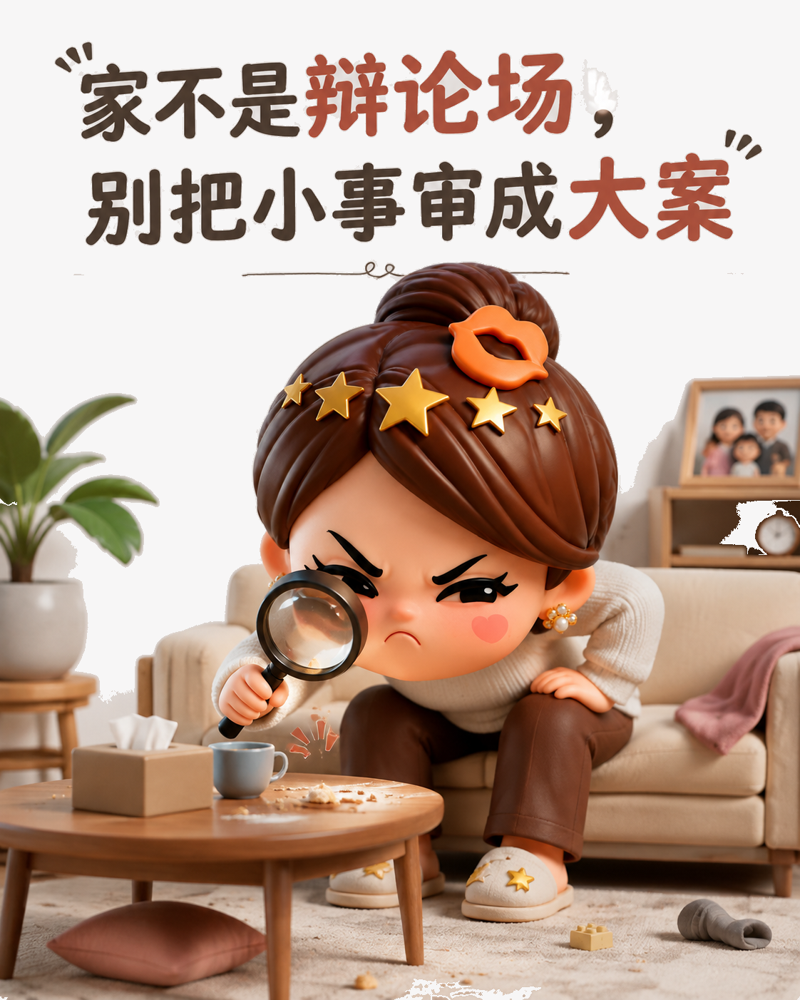
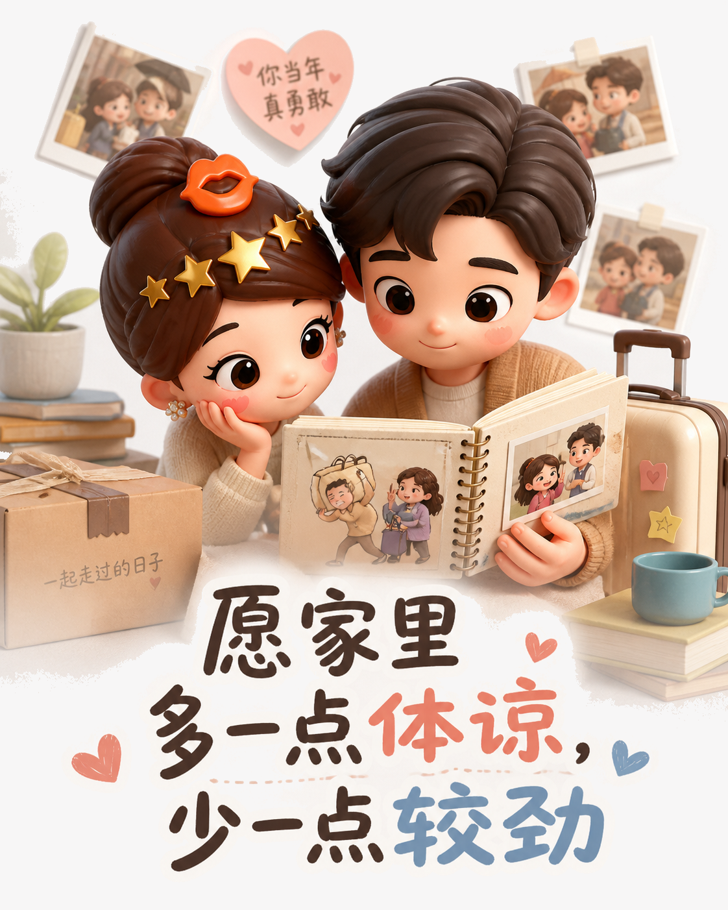
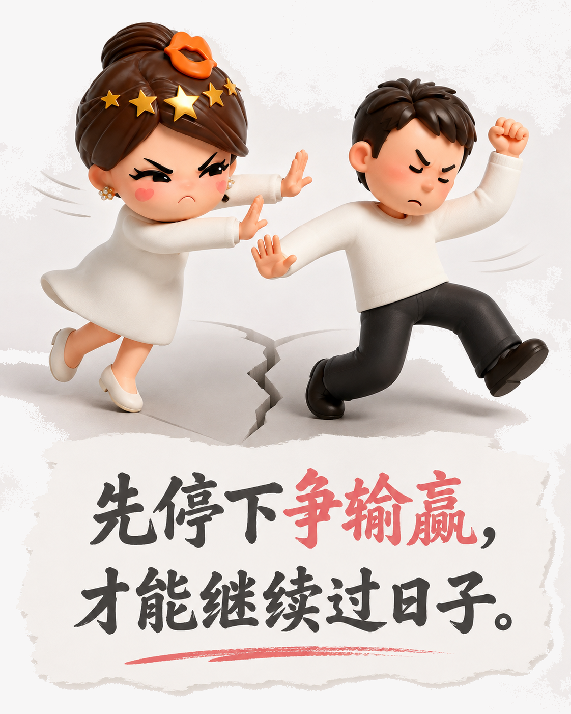

家不是擂台，别让亲人输给道理
真正让一个家疲惫的，常常不是大事，而是每个人都想证明自己没错。
日子一长，家人最容易把小事升级成输赢：谁放错了东西，谁说话更难听，谁又没有照着谁的方式做。争论看似在解决问题，实际上却把客厅变成了赛场。每次都要分出对错，关系便在一次次胜负里变得僵硬。

先把家从辩论场里救出来
外面已经有足够多的竞争：工作要谈判，生活要赶路，情绪还要不断自我消化。回到家，最珍贵的不是有人替你赢一场争辩，而是终于可以不用防备。饭咸了就换个说法，东西乱了就顺手收好，孩子做错题就陪他找原因。让步不是没主见，而是知道眼前的人比这件小事重要。

很多时候，先停嘴就是一种照顾
家庭矛盾最难收场的时刻，往往不是意见不同，而是谁都不肯先停下来。一个等对方低头，一个等对方认错，旁边的孩子和老人也被卷进沉默。可以有分歧，但不必把分歧变成审判；可以表达感受，但别用刻薄去换服从。先暂停，等情绪退潮，再讨论真正需要解决的事。

把赢一次，换成一起过下去
家不是法庭，亲密关系也不是靠判决维持的。愿意少追问一句、少翻旧账一次，给彼此留下台阶，日子才有继续变好的空间。道理赢了并不会自动带来幸福，温柔的收手却常常能保住一家人的心。